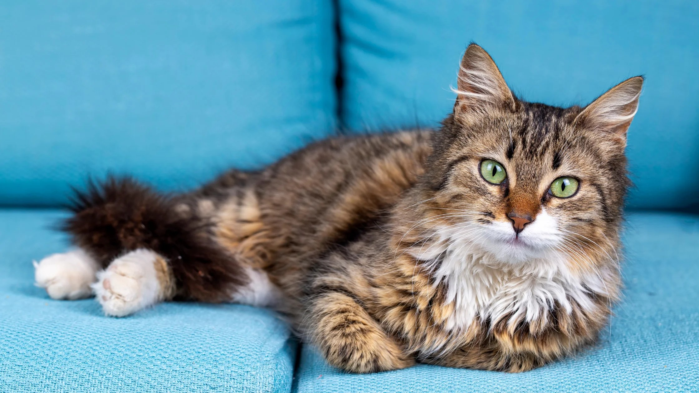

Sretni blagdani!
Dragi naši ljubitelji ljubimaca,
Sretan vam Božić i blagoslovljena Nova godina! Želimo vam obilje ljubavi, radosti i smijeha u
krugu vaših obitelji i najdražih četveronožnih prijatelja. Hvala vam što ste bili dio naše
pet-friendly zajednice tijekom protekle godine.
Pročitaj više...

Topli kaputići za Vaše ljubimce
Zima je stigla, a s njom i hladnoća koja može izazvati nelagodu kod naših dragocjenih
četveronožnih prijatelja. U Pet Paradise, brinemo se o dobrobiti vaših ljubimaca, a upravo
smo dobili najnoviju kolekciju kaputića koja će ih držati toplima i elegantnima tijekom hladnih
dana.
Pročitaj više...

Vodič za zdravu ishranu
Pravilna prehrana ključna je za zdravlje i sreću vašeg ljubimca. U ovom blog postu, istražit
ćemo važnost odabira pravilne hrane prema dobi, veličini i posebnim potrebama vašeg ljubimca.
Također ćemo dijeliti savjete o prepoznavanju alergija i osiguravanju uravnotežene prehrane kako
bismo zajedno stvorili temelj dugog i sretnog života vašeg ljubimca.
Pročitaj više...

Kako pravilno njegovati mačku
Duga mačja dlaka može biti očaravajuća, ali i zahtjevna za održavanje. U ovom blogu, razgovarat
ćemo o savjetima i trikovima za pravilnu njegu dugačkog mačjeg krzna. Od pravilnog češljanja do
odabira odgovarajućih proizvoda za njegu, naučite kako održavati mačju dlaku sjajnom, bez
zapetljavanja i zdravom.
Pročitaj više...

Briga o zdravlju Vašeg hrčka
Hrčci su mali čuvari zdravlja. Ovaj blog post će vas voditi kroz osnovne
korake za održavanje hrčkova zdravlja. Od pravilne prehrane do higijene i preventivne
zdravstvene skrbi, saznajte kako pružiti svom malom prijatelju najbolje uvjete za dug i sretan
život.
Pročitaj više...
Prijavi se na naš newsletter!
U Pet Paradiseu vjerujemo u dijeljenje radosti, informacija i posebnih ponuda s našim zajednicama
ljubitelja životinja. Zato vas pozivamo da se prijavite na naš newsletter kako biste ostali korak
ispred uzbudljivih novosti, savjeta i ekskluzivnih promocija!